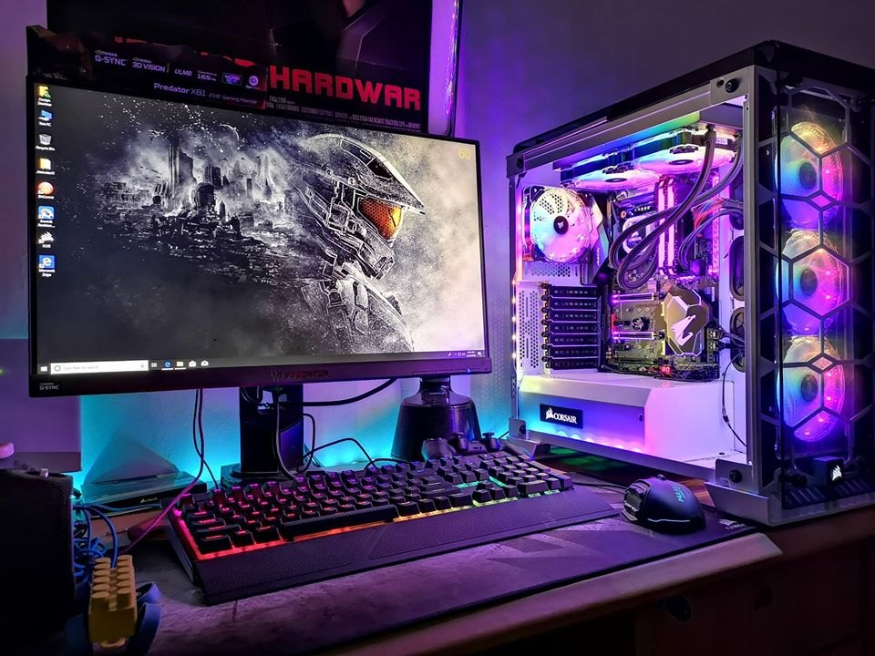

Computer & Laptop Services
We fix. We build. We upgrade. At JeRoSt, we offer full-scale computer and laptop solutions — whether it’s a broken screen, laggy system, or a custom setup.
We work with care, speed, and clarity. From home users to office networks, we’ve got your tech backed up and running smooth.
What We Offer:
✔ Hardware Repair & Replacements

We replace damaged components like RAM, hard drives, keyboards, and motherboards with precision.
✔ OS Installation & Virus Removal
We reinstall Windows/Linux, remove malware, and optimize your system for faster performance.
✔ Laptop Screen & Keyboard Fixes
Cracked screen? Sticky keys? We repair or replace them with genuine parts and clean installations.
✔ Custom-built Desktops & Upgrades
Need a system for gaming, design, or business? We build to your specs and future-proof your PC.
✔ On-site and Remote Support
Whether you're next door or in the next city, we’re just a call away for quick fixes and setups.